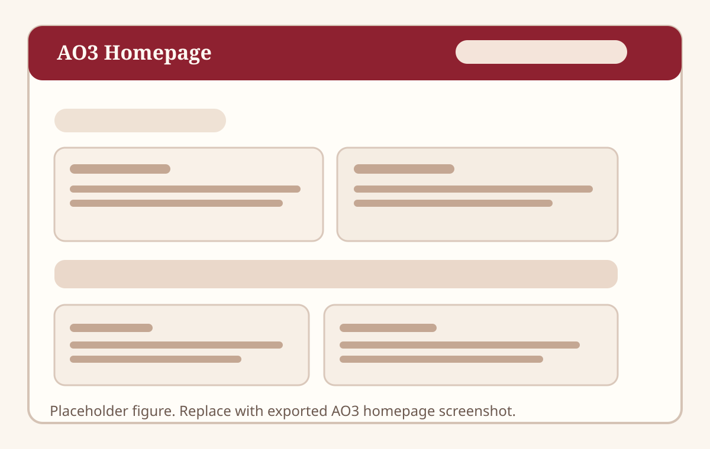
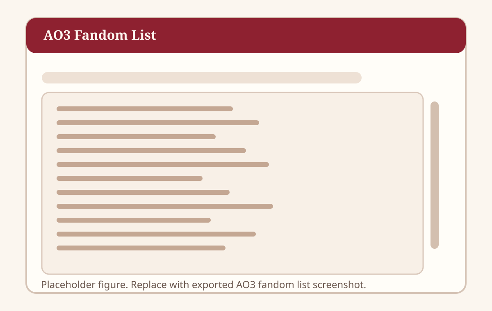
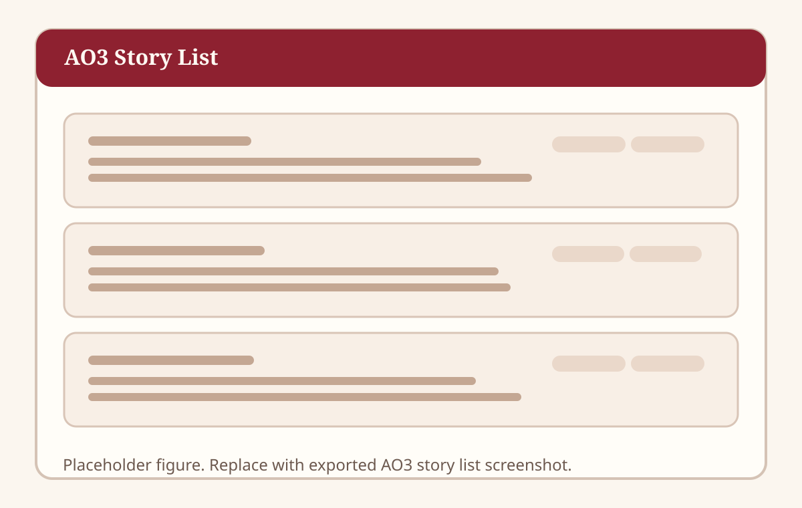
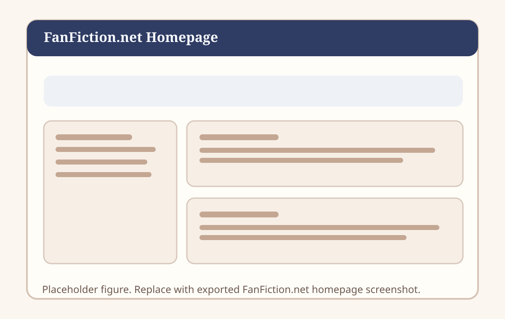
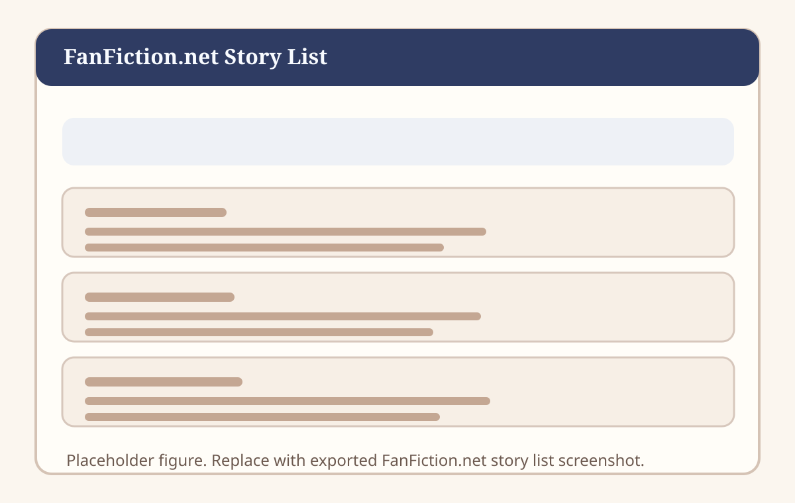
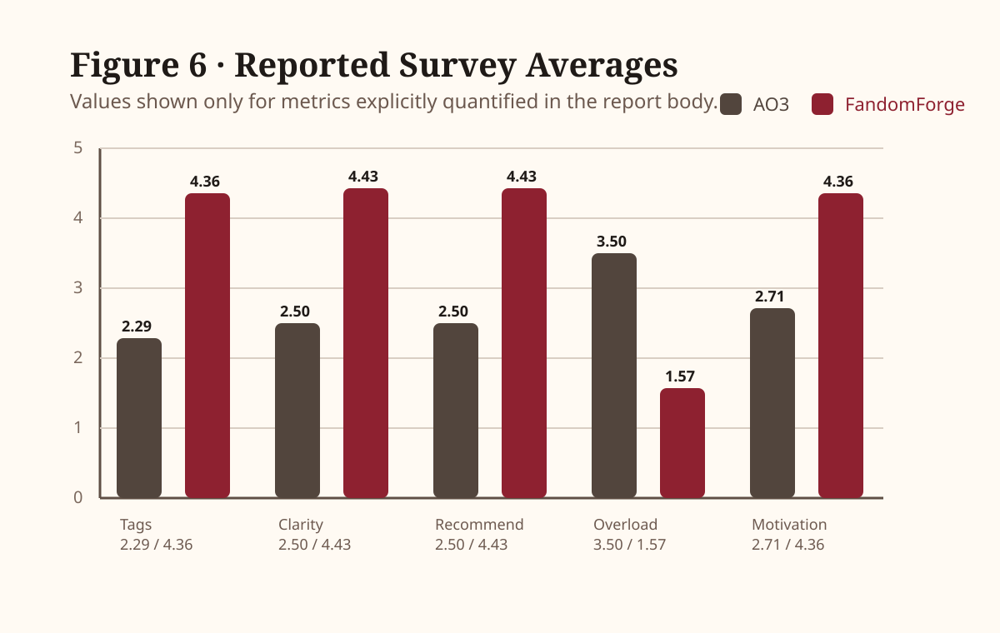
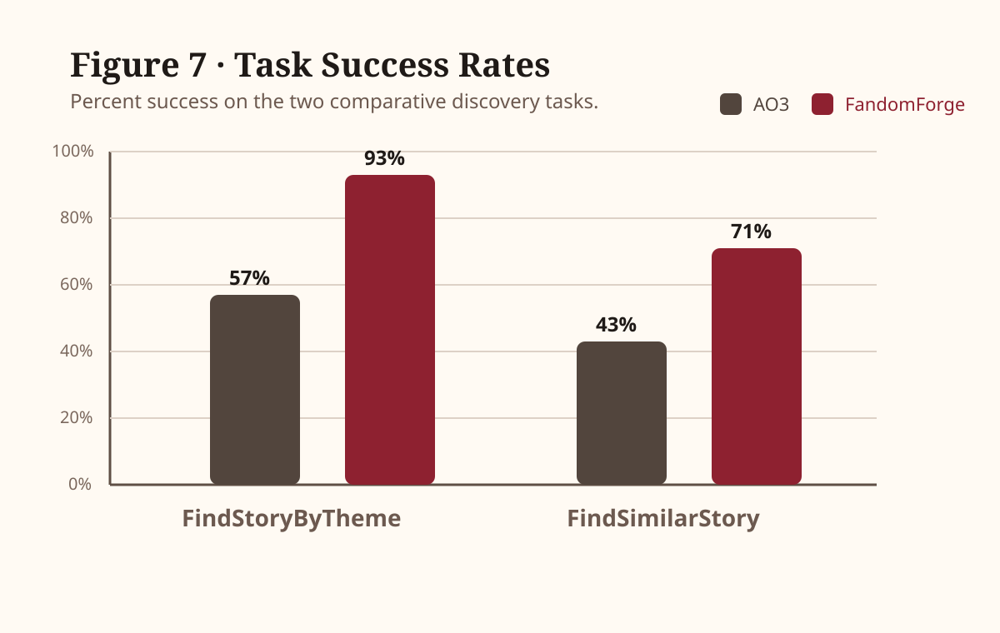
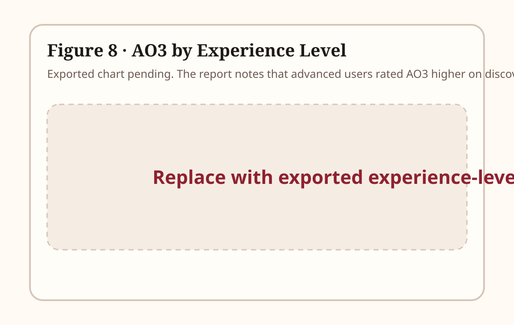
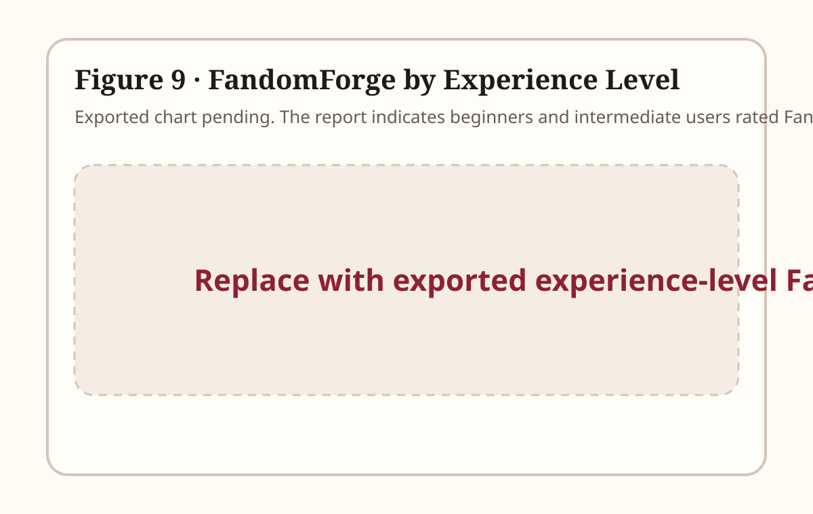

60.5%
motivation improvement over AO3
Concordia University
Gina Cody School of Engineering & Computer Science · SOEN 357
Final Report Microsite
A web-native presentation of the team’s final report on whether a simpler, visually guided fanfiction interface can improve adolescent motivation and content discovery compared to AO3.
Key Findings
60.5%
motivation improvement over AO3
93%
theme-task success on FandomForge
14
participants aged 13 to 17
01
FandomForge is a prototype fanfiction platform designed for adolescents aged 13 to 17. The project examines whether a simpler, visually guided interface can improve motivation to read and write fanfiction while helping younger users locate relevant content more efficiently than existing platforms such as Archive of Our Own (AO3).
The design emphasizes reduced cognitive load, curated navigation, and an easier path into tags and recommendations. To evaluate the concept, the team conducted a comparative user study with 14 participants who completed content-discovery tasks on both AO3 and the FandomForge Figma prototype before responding to a Likert-scale questionnaire.
Across every major metric tied to beginner usability, FandomForge outperformed AO3. Motivation improved from 2.71 to 4.36 out of 5, exceeding the project’s 25% target, while participants also reported clearer navigation, better tag understanding, and substantially less cognitive overload.
02
Digital fanfiction platforms operate as spaces for adolescent literacy, creativity, and community participation, but the current leaders place meaningful friction in front of younger users.
Leisure reading among adolescents has been declining, which makes the design of motivating, approachable reading environments more important. Existing fanfiction platforms already give teens access to stories, characters, and communities they care about, yet the entry experience remains uneven. AO3 offers powerful tagging and search, but its dense, text-heavy interface can overwhelm newer users. Wattpad emphasizes discovery and social activity, but often at the expense of filtering precision, readability, and user control.
FandomForge was designed to occupy the gap between those models. The prototype uses curated visual navigation and a simplified discovery flow to support adolescents who want choice and relevance without needing deep platform literacy on day one.
04
FandomForge was positioned against the two reference platforms most relevant to the study: AO3 for depth and tagging precision, and FanFiction.net for legacy popularity and long-standing usability issues.
Reference Platform
AO3 is one of fanfiction’s most prominent platforms because it offers flexible tagging, detailed filtering, and deep content coverage. That same power creates a high cognitive barrier for beginners.



Reference Platform
FanFiction.net remains historically important, but the report positions it as a cautionary example of cluttered interface design, weak visual hierarchy, and poor moderation outcomes.


05
FandomForge was developed as a low-fidelity interactive Figma prototype with the evaluation centered on interface clarity, discoverability, and reduced cognitive load.
The prototype focused on the core user interface surfaces needed for fanfiction discovery: simplified navigation, curated categories, and a reduced-complexity tag model. Instead of reproducing AO3’s flexibility-heavy filtering system, the design intentionally prioritized visual wayfinding and lower decision fatigue.
The interface direction was guided by usability principles such as reducing excessive choices and lowering cognitive load through Hick’s Law. Even without a functional backend, the wireframes supported realistic navigation paths that were sufficient for comparative usability tasks.
01
Define the gap between AO3/FanFiction.net complexity and adolescent usability.
02
Build clickable screens focused on navigation, discovery, and lightweight tagging.
03
Ask participants to complete the same discovery tasks on AO3 and FandomForge.
04
Record Likert responses and binary task outcomes to compare each platform.
06
The evaluation compared immediate usability rather than long-term retention: users were asked to interact with both platforms and complete the same pair of discovery tasks with minimal ramp-up.
Participants
Participants were recruited through convenience and snowball sampling. The average participant age was 15.14 years.
Task 1
Participants were asked to find a story based on a general theme or interest.
Task 2
Participants were asked to locate content similar to a provided story concept or example.
Survey
Responses captured ease of navigation, clarity, discoverability, tag understanding, motivation, confidence, recommendation likelihood, satisfaction, and perceived overload.
1 / 0
task outcomes recorded as binary success values
AO3 → FF
most participants used AO3 first, then FandomForge
No training
participants proceeded directly to the tasks to test learnability
07
Fourteen participants aged 13 to 17 completed the comparative study, and the reported findings strongly favored FandomForge on beginner-facing usability and motivation measures.
FandomForge outperformed AO3 across all nine survey questions. The largest gains reported in the paper were tag understanding (2.29 vs 4.36), interface clarity (2.50 vs 4.43), and recommendation likelihood (2.50 vs 4.43). Cognitive overload also moved in the expected direction, dropping from 3.50 on AO3 to 1.57 on FandomForge.
Motivation, the project’s core hypothesis measure, improved from 2.71 on AO3 to 4.36 on FandomForge, a 60.5% increase that exceeded the team’s 25% target. Task success followed the same pattern: 93% versus 57% for FindStoryByTheme, and 71% versus 43% for FindSimilarStory.
The main caveat is experience level. Beginners and intermediate users favored the prototype clearly, while advanced users preferred AO3 in a few areas tied to depth and control. That nuance matches the written feedback: one advanced user said AO3 was “better for finding specific stuff,” while another preferred “having more control.”
“too many tags didnt get it”
Beginner response about AO3
“didn't understand anything lol”
Beginner response about AO3
“way easier”
Beginner response about FandomForge
“i liked it”
Beginner response about FandomForge




08
FandomForge appears strongest as a beginner-focused interface. The biggest gains were in clarity, tag understanding, recommendation likelihood, and reduced overload.
Advanced users valued AO3’s control and specificity more highly, which suggests the prototype trades some depth for a lower barrier to entry.
A full limitations discussion, comparison back to the literature, and a clearer statement of what the prototype cannot yet test without a working backend.
09
10
Appendix A
The report notes that the spreadsheet link should be used instead of pasting raw table content directly because the formatting degrades in plain text.
Survey CSV link pending insertion.
Supporting Materials
This area is reserved for any original observations, questionnaires, approved recordings, or supplemental research files that accompany the final report.
Supporting artifacts not yet attached.
11